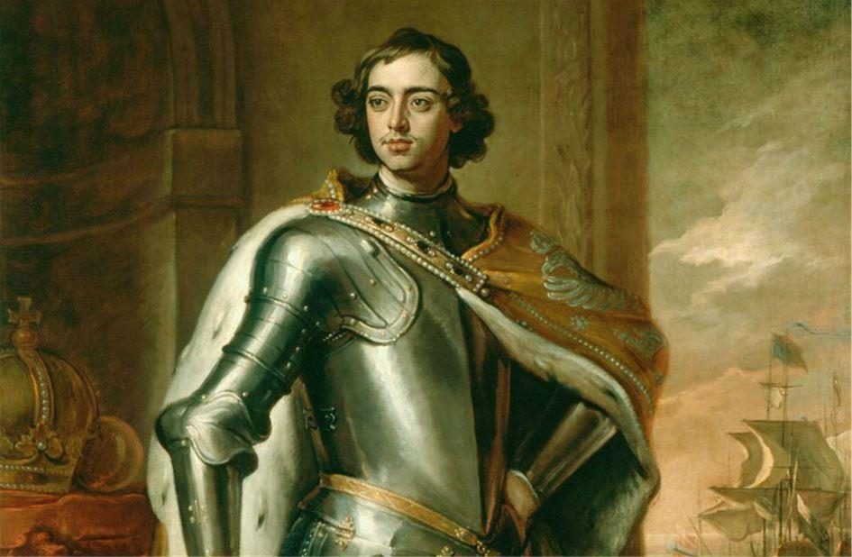
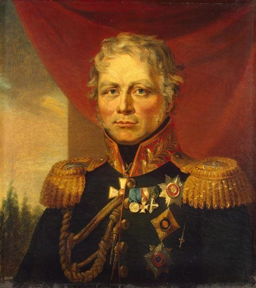
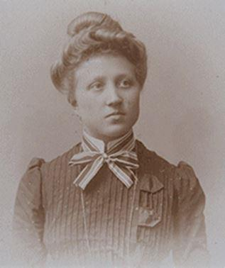
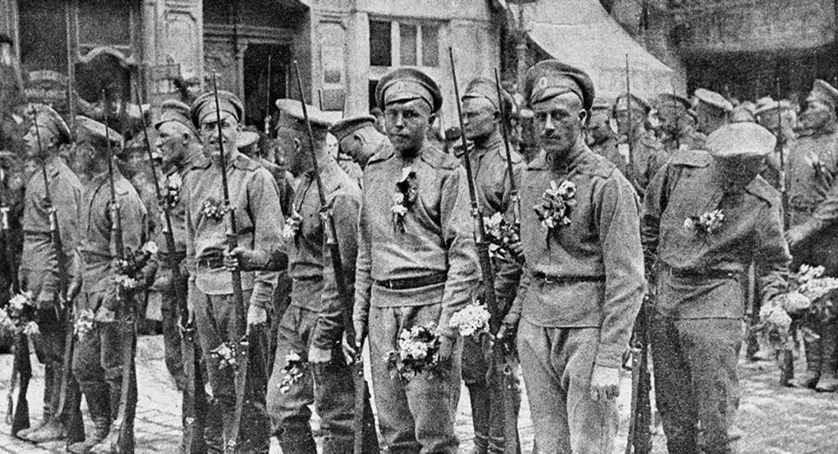
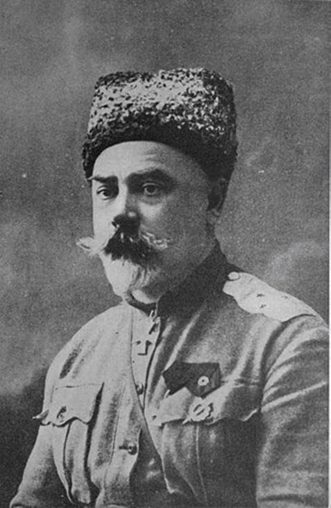
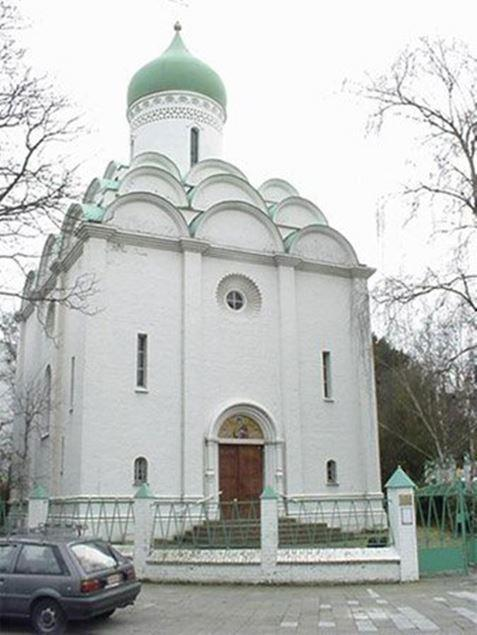
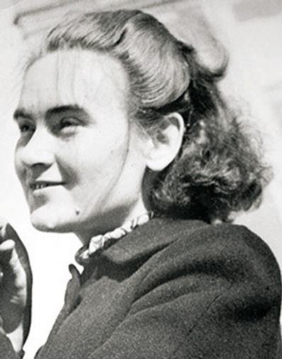
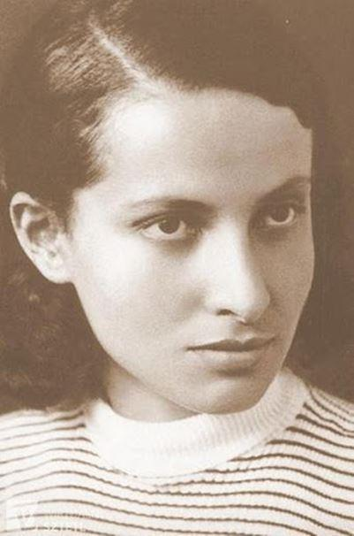
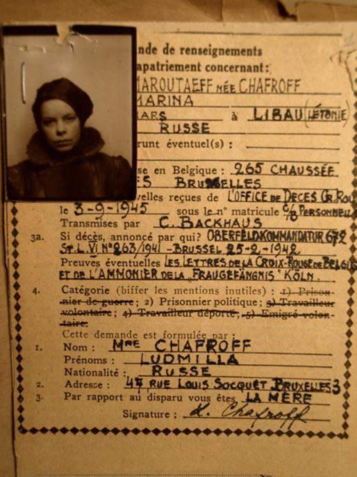

D’un point de vue géographique et démographique, les différences entre la Belgique et la Russie sont impressionnantes : La Russie compte 17 millions de Km2 et 147 millions d’habitants contre 30.700 km2 et onze millions d’habitants pour la Belgique. Moscou est plus peuplée que le plat pays, qui a une superficie inférieure à celle du lac Baïkal. Si la Russie avait une densité de population équivalente à celle de la Belgique, elle compterait… 55 milliards d’habitants ! On pourrait donc d’étonner des nombreux liens qui unissent les deux nations au niveau historique, culturel, commercial, industriel ou politique.
Pierre le Grand en Belgique (1797)
On situe parfois les premières relations belgo-russes à la mission de Willem van Ruysbroeck, frère mineur flamand mandaté par Louis IX pour rencontrer le grand Khan, à l’époque où l’empire mongol occupait une partie de la Russie actuelle (1253).
La visite de Pierre le Grand sert plus souvent de date de référence, même si la Belgique n’existait pas en tant que telle (avec les Pays-Bas, elle faisait partie de l’Empire austro-hongrois sous le nom de Pays-Bas autrichiens). Pierre le Grand fut accueilli dans nos villes avec les plus grands honneurs par les plus hautes autorités en place. Il a visité successivement Anvers, Maline, Bruxelles, Bruges, Ostende, Namur, Liège et fit une cure d’un mois dans la ville thermale de Spa. La visite belge de Pierre s'est avérée parfois peu protocolaire. Curieux de tout, le monarque s’est intéressé aux églises et bâtiments civils, aux infrastructures portuaires et militaires. Ce sans négliger les spécialités culinaires locales. Un des premiers russes à avoir séjourné longtemps en Belgique est le peintre Andrei M. Matveev (1701-1739), qui, en 1723, a étudié à l’'Académie des Beaux-arts d'Anvers.
L’annexion à la France (1792-1814)
En novembre 1792, les Français attaquent les Pays-Bas autrichiens. En 1795, la France annexe les Pays-Bas autrichiens, les principautés de Liège et de Stavelot et le duché de Bouillon. À cette époque, le bassin industriel wallon devient une des régions les plus prospères d'Europe. Néanmoins, le peuple souffre des guerres de l'Empire et la période française conduit à un déclin du néerlandais qui est éliminé comme langue administrative. Arrivée en Russie lorsqu’il était encore enfant, Léopold de Saxe-Cobourg-Gotha, futur roi des Belges combat Napoléon dans l'armée russe pendant la campagne européenne de 1813-1814 en tant que lieutenant général et reçoit l’Ordre de Saint-Georges de 4e classe.
Les Cosaques en Belgique et les « cosaques » belges
Vainqueurs de la bataille de Leipzig, les Alliés pénètrent en France le 1er janvier 1814. L’Armée du Nord (Allemands, Russes, Anglais et Suédois). Les cosaques, sous les ordres du général Ferdinand von Wintzingerode, occupent la plupart des provinces belges où ils impressionnent fort la population par leur tempérament. Ils sont souvent réprimandés par leurs supérieurs pour pillages et – un de leur passe-temps favori – soulever les jupes des dames avec leurs longue lance.
La brutalité des Uhlans était aussi un souci sur lequel les officiers vainqueurs fermaient les yeux. À Gand, le quartier populaire « Moscou » a été construit dans les années cinquante à l’emplacement d’un ancien camp cosaque.
Suite au traité de Vienne, la Belgique est rattachée aux Pays-Bas en 1815. La révolution de 1830 (août-octobre) se termine par la déclaration d’indépendance de la Belgique. Le Gouvernement provisoire cherche à se constituer une force militaire capable de protéger le jeune état. Un appel est lancé aux anciens soldats pour constituer une armée digne de ce nom. Parmi ces recrues, les frères Lucas, Charles-Alexandre et Alexandre-Joseph rassemblent quelques sous-officiers et soldats pour former une compagnie franche de cavaliers, forte de 71 cavaliers, à laquelle il donne le nom de « Cosaques de la Meuse » (1831-1833).
Coopération économique et « Erasmus » avant la lettre
Cette période a coïncidé avec le développement économique de la Belgique, qui est rapidement devenue la deuxième puissance industrielle au monde1 Sans surprise, les années qui ont suivi ont été marquées par une augmentation des relations bilatérales, en particulier commerciales. La Belgique est devenue un important importateur de céréales et de matières premières russes. Des lignes maritimes régulières reliant Saint-Pétersbourg, Riga et Odessa à Anvers ont été tracées et empruntées par plus de cinq cents navires russes par an.
Sous les règnes d’Alexandre III et Nicolas II, les entreprises belges se taillent la part du lion dans le domaine de l’industrie lourde, la construction mécanique, le transport urbain2.Près de 20.000 Belges travaillaient dans le bassin du Donbass3. Plus de 160 entreprises à capitaux ou direction belges étaient installées dans l’Empire russe.
On assiste fin du 19e au début du 20e siècle à un engouement des Russes pour la Belgique. Le succès politique du Parti Ouvrier Belge attire des politiciens et des révolutionnaires, dont V.I. Lénine, venu à Bruxelles en janvier 1914.
À l’époque, la pédagogie belge était renommée et des enseignants russes sont venus en Belgique pour se familiariser avec le système scolaire. Les Universités belges de Bruxelles, Anvers, Gand, Louvain et Liège ont formé des centaines d’étudiants russes. À Liège, dans le quartier d’Outremeuse, Henriette Simenon-Brüll, la mère du romancier, louait des chambres à des étudiants russes. À leur contact, le petit Georges a découvert les classiques de la littérature russe.
Russes et Belges dans la Grande Guerre
En 14-18, de nombreux soldats russes combattent sur le sol belge, entre autres sur le front de l’Yser. On dénombre près de 480 tombes de soldats du Tsar dans différents cimetières de Belgique, la plupart à Robermont, le « Père-Lachaise liégeois ». Le 21 septembre 1915, environ trois cent volontaires belges embarquent au port de Brest et accoste à Arkhangelsk trois semaine plus tard. Le « Corps expéditionnaire belge des Autos-canons-mitrailleuses » affronte les Prussiens et les Austro-Hongrois sur le front ouest. Ayant reçu l'ordre de rester neutres durant la guerre civile, les Belges doivent rentrer au pays… via l’Est de la Russie, les USA et l’Océan atlantique.

L’exode postrévolutionnaire
Plus de dix mille exilés russes ont fui en Belgique. En 1920-1922, l'ancien commandant en chef de l'armée des Volontaires, puis des forces armées du Sud de la Russie, le général A. I. Denikin, a trouvé un refuge temporaire à Bruxelles. Dans les années 1920, une autre grande figure du mouvement Blanc, le Baron P. N. Wrangel, a vécu à Bruxelles et est y est décédé. L'ancien commandant en chef de l'armée Blanche a fondé le 1er septembre 1924 l'Union militaire Générale russe. L’Église orthodoxe russe a joué un grand rôle la vie des primo-arrivants russes. La première église orthodoxe russe est apparue en Belgique au début du XIXe siècle : en 1816, le Prince Guillaume d'orange a épousé la sœur d’Alexandre Ier, Anna Pavlovna qui a installé dans son palais à Bruxelles une chapelle qui disparut après la révolution de 1830.
Le premier lieu de culte orthodoxe est apparu en Belgique en 1862 : la chapelle Saint-Nicolas a été érigée à Bruxelles. À partir de 1875, la paroisse fut placée sous l'autorité du ministère des affaires étrangères de l'Empire russe. Après la révolution et la Guerre civile en Russie, les églises orthodoxes, sont devenues des points de rencontre des expatriés et de nouvelles paroisses orthodoxes ont été créées dans tout le pays. L'orthodoxie a été reconnue comme une religion reconnue en Belgique en 1985.

Eglise orthodoxe russe de Saint Job à Bruxelles
Des artistes en exil
De nombreux peintres trouvent refuge en Belgique. Le nom le plus connu du grand public est Élisabeth Ivanovsky. Les membres de la colonie d'artistes russes, fondée en Belgique en 1920-1930, menaient une vie artistique prolifique. Ils présentant régulièrement leurs œuvres lors d'expositions dans différentes villes du pays. La dernière exposition de groupe des artistes de la « première vague » d'émigrants a eu lieu en 1943.
1941-1944 : Les Partisans russes en Belgique
L'occupation de la Belgique en 1940 par les troupes du Troisième Reich a été une épreuve pour les communautés orthodoxes. Avec des patriotes authentiques et le lot de collaborateurs qui pensaient que la chute du régime soviétique était imminente. Deux Russies étaient côte à côte : la « rouge » des prisonniers de guerre soviétiques et la « blanche » des exilés. La plupart des Russes de Belgique, soit que soit leur camp, ont combattu courageusement l’ennemi. On estime à un plus d’un millier les prisonniers de guerre soviétiques évadés des camps de travaux forcés ainsi que des émigrants russes qui ont rejoint la Résistance. En août 1943, dans le Nord-est de la province belge du Limbourg, la brigade de guérilla russe Retenons pour exemple la brigade « Za Rodinu », (« Pour la Patrie »), active dans le Limbourg belge et dirigée par le lieutenant-colonel K. D. Chouchkine et La « Compagnie russe du 4e Régiment des Partisans Armés de l’Ourthe-Amblève » des officiers Gregori Lehrman alias Lizogubenko et Evgeni Dotsenko.
Il est bien sûr impossible de ne pas mentionner l'exploit héroïque de Marina Shafrova-Marutaeva, issue de la première vague d'émigration. Résistante elle a revendiqué le meurtre d’un officier de la Wehrmacht afin de sauver soixante citoyens belges qui devaient être fusillés en guise de représailles.

La guerre froide
Les relations entre l'Union Soviétique et la Belgique n’étaient fondamentalement pas différentes qu’entre les autres nations des deux blocs. Les Russes sont loin d’être absents ont inscrit de nombreuses pages glorieuses dans l'histoire de la culture et de la science belges. On peut citer, par exemple, l'éminent scientifique, lauréat du prix Nobel de chimie en 1977, llya Prigogine (Moscou 1917 - Bruxelles 2003), prix Nobel de chimie en 1977. Les ingénieurs russes ont construit un impressionnant pavillon à l’exposition universelle de Bruxelles en 1958 et ont participé à la conception et la construction de l'Atomium.
Les Belgo-russes du 21e siècle
L'effondrement de l'URSS en 1991 a provoqué une nouvelle vague d'émigration vers la Belgique, augmentant ainsi le volume de la diaspora russophone. La diaspora moderne est bien parfaitement intégrée et très bien organisée. L'ambassade, le centre culturel et l'archidiocèse de l'église orthodoxe Russe constituent les piliers de la communauté russophone. L’impressionnant centre culturel, situé dans un hôtel particulier à un jet de pierre du Botanique propose plus de 300 activités par an. D’autre part, il existe plusieurs dizaines d'organisations membres de la Fédération Belge des Associations Russophones (BFRO). Au mois de mai, la Fédération organise une grande fête à Bruxelles : « Rendez-vous avec la Russie ».
La langue russe est enseignée dans les grandes universités du pays, et les autorités belges ont décidé de la promouvoir au lycée. Ces cours, dispensés également dans des écoles privées connaissent un intérêt croissant.
J-L. E.
NOTES ET SOURCES
1. cf. «La Belgique industrielle en 1850 ». Dir. Bart Van der Herten, Crédit Communal 1995.
2. La Belgique fut le premier pays du continent à être doté d’un chemin de fer.
3. Rappelons que Donetsk est jumelée avec la ville de Charleroi.
"Русская" Бельгия: от Петра I до "Атомиума"
https://rusmir.media/2008/05/01/belgium
Illustration bandeau : Fête russo-belge à la Cavalcade de Lille Avril 1892.
Partager cette page